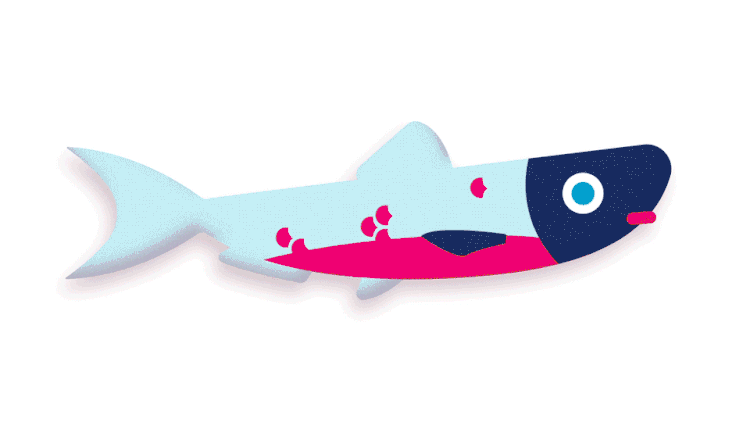
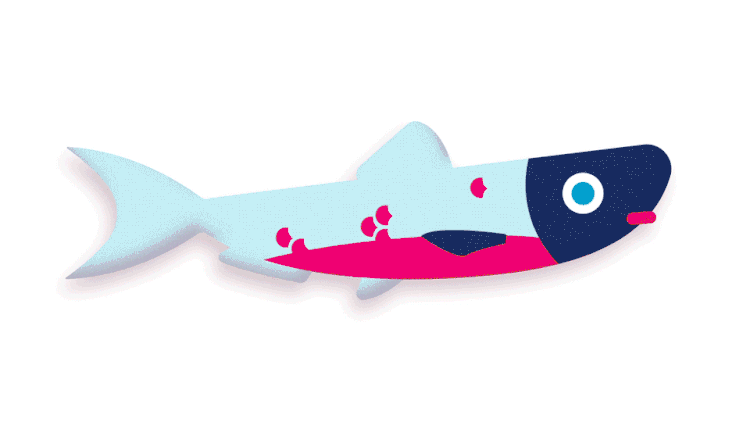

hi i'm maddy :—)
welcome 2 my portfolio

hi i'm maddy :—)
welcome 2 my portfolio~*~*~
studies @
carnegie mellon
design + hci
worked @
twitter — summer 2019
livity — summer 2018
nvidia — summer 2018
© maddy cha 2020
UN Overfishing
Increasing Awareness
Skills:
storyboarding
brand guidelines
motion graphics
Overview:
Through concept creation and digital prototyping, I created a short animation with the purpose of bringing awareness to the issue of overfishing. This was a response to the 14.4 Sustainable Development Goal for 2030. I utilized a more playful style of illustrations and movements in order to appeal to a younger audience.
 


Initial Research
I began researching the 2030 agenda for sustainable development by the United Nations. From here, I decided to focus more on Goal 14: “Conserve and sustainably use the oceans, seas and marine resources for sustainable development“. More specifically, I focused on 14.4: “By 2020, effectively regulate harvesting and end overfishing, illegal, unreported and unregulated fishing and destructive fishing practices and implement science-based management plans, in order to restore fish stocks in the shortest time feasible, at least to levels that can produce maximum sustainable yield as determined by their biological characteristics”. I also started to familiarize myself with the United Nations brand guidelines.


Initial Storyboarding
After pitching my concept, I started to storyboard how I wanted my narrative to play out. I ended up making two different storyboards that attempted to give off a similar message.
I started off wanting to try something more whimsical and humorous in nature. Rather than focus more on the issue of overfishing, I wanted to make it more clear what the audience could do to put an end to overfishing.

Final Storyboard
For my second storyboard, I put more focus on the issue itself, using repetition as a means of communicating the scale of the problem. I pitched these storyboards to a variety of my peers, and ended up deciding to move forward with the latter, as giving more context to the issue seemed to gain more sympathy with the audience.
Brand Guidelines
Before jumping in to the visuals, I worked on familiarizing myself with the United Nation’s SDG brand guidelines, with a focus on color and typography. This understanding helped me to more quickly hone in on the elements of my visual style that I wanted to use to communicate.

Visual Variables
I started by creating a fish, which I didn’t want to be too specific in nature. While being based on the blackfin cisco (a species that was recently marked as extinct), I kept the colors and forms a little more generalized.
Once I had figured out which colors I wanted to employ, I began setting up keyframes that I would be showcasing in my video. Creating each of these assets in advance made the transition to After Effects more efficient.

Animating
Finally, I took all of the assets into After Effects to create my animation. I sectioned off my storyboard into four parts and created compositions for each, so as to keep myself more organized. I utilized a lot of different layer styles to add more dimension to the visuals.


Reflection
This project gave me a greater appreciation and understanding of underlying concepts and how they influence and shape the design process. Through working with Illustrator and After Effects in tandem, I also figured out an efficient work flow for myself that allowed me to experiment and iterate quickly to come up with a solution that was satisfactory.